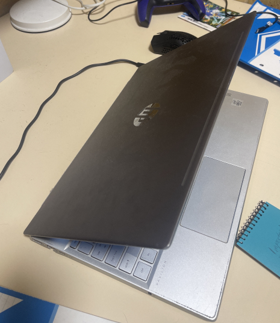

I was born into a family of 5 where we lived in Sydney where I Stayed for the first few years of my life.
Growing up, I was all about wanting to reach the goal of becoming a teacher with the goal of telling stories to everyone around me.
As I've grown, I grew out of this and became more interested in the future of the world whilst consulting the idea of technology.
Now that I've indulged myself with the ability to learn about technology in such a fashion, I am ready to explore the vastness of it.
I am hoping to learn more about the technology of today to benefit the technology of tomorrow.
